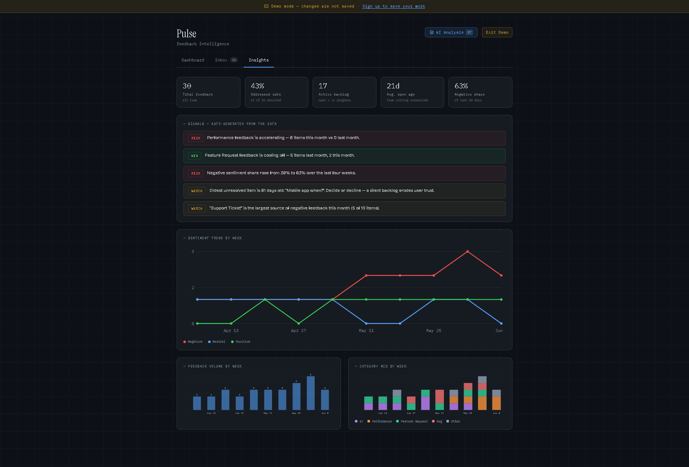
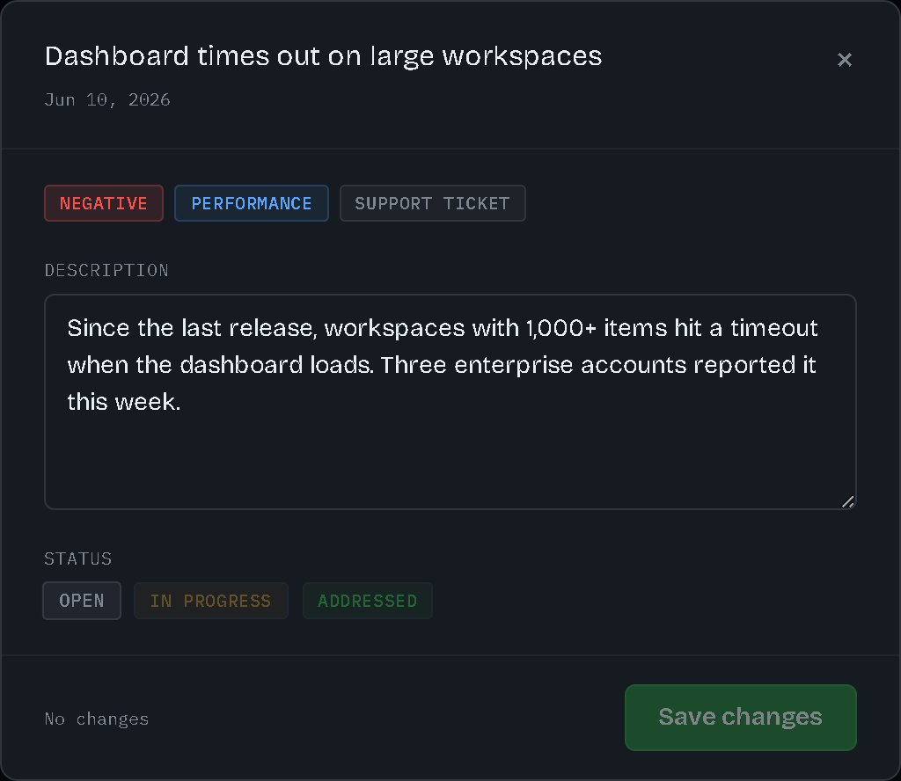

Rank, don't just summarize
Early versions produced a paragraph summary. Useful, but it didn't change behavior. Forcing the model into a ranked structure with explicit "can wait" calls made the output actionable — and contestable, which is the point.
A live AI-powered feedback intelligence platform that collects user feedback, classifies it with AI, tracks how sentiment and categories trend week over week, and generates a ranked answer to the only question that matters: what should the team fix first?

Pulse is a feedback tracker with an intelligence layer on top. Feedback arrives from app reviews, support tickets, and surveys; each item is classified with AI assistance — sentiment, category, and a suggested title the PM confirms or overrides. The dashboard shows the live shape of the feedback — sentiment split, category breakdown, open vs. addressed — an Insights view tracks how that shape moves week over week, and an AI analysis turns it into a ranked, reasoned priority list.
I built it because feedback triage is the highest-leverage, most neglected PM ritual I saw across 30+ client projects: everyone collects feedback, almost no one converts it into decisions at a regular cadence.
Raw feedback is high-volume, mixed-sentiment, and unevenly important. A crash report, a feature request from an enterprise customer, and a vague complaint about onboarding all land in the same inbox — and the loudest item wins, not the most important one.
Existing tools solved collection and tagging. The decision step — weighing impact, urgency, and frequency across items — stayed manual, slow, and dependent on whoever ran the spreadsheet.
I scoped Pulse around one output: a defensible priority ranking. Every feature earns its place by feeding that output or making it trustworthy.
Sentiment and category classification exist so the AI has structured signal, not just text. Status tracking (open → in progress → addressed) exists so the ranking reflects what's already being handled. Filters exist so a PM can interrogate the data behind a recommendation instead of taking it on faith.
Crucially, the AI output is split into "prioritize first" and "can wait" — with a written rationale per item. A ranking without reasons is a black box; a ranking with reasons is a conversation starter for the team.

Early versions produced a paragraph summary. Useful, but it didn't change behavior. Forcing the model into a ranked structure with explicit "can wait" calls made the output actionable — and contestable, which is the point.
Each ranked item links back to the underlying feedback and shows its justification. The PM can disagree with the model, but never has to wonder where a conclusion came from.
Marking items addressed updates the picture the AI reasons over — and the analysis flags itself stale the moment the underlying data moves. A live operational view, not a one-off report.
The Insights view pairs trend charts with a rule-based signal engine that writes the takeaway a PM would otherwise extract by hand: category momentum, sentiment shifts, ageing backlog, loudest negative channel.
I shipped with manual feedback entry plus source tagging instead of building API integrations first. It validated the analysis loop — the actual hypothesis — weeks earlier.
Dashboard, triage inbox, insights view, and the analysis panel. State kept deliberately thin; stored data owns truth.
Low-latency inference for sentiment and category classification at intake, plus the structured priority analysis over the active feedback set.
Feedback items, tags, and statuses behind per-user row-level security. The latest analysis persists with a fingerprint of what it analyzed, so nothing silently re-runs inference.
Weekly sentiment and category trends, resolution metrics, and rule-based signals — computed live, no chart libraries, no warehouse.
flow: ingest → classify → store → aggregate → analyze → rank
On-demand analysis instead of continuous re-ranking on every new item.
The dashboard can briefly lag reality — accepted, because triage is a cadence ritual, not a real-time feed, and it cuts inference cost sharply.
Fixed category taxonomy (UX, performance, bug, feature request, other) over model-generated categories.
Less nuance per item, but breakdowns stay comparable week over week — consistency beats cleverness for trend data.
AI recommends, human decides. The model never changes a status or closes an item.
One extra click per action — a price worth paying to keep accountability with the PM and trust in the tool.


The leap in usefulness came from constraining the model's format, not improving its prose. Output shape is where PMs should spend their AI design effort.
Showing evidence and rationale next to every recommendation did more for adoption than any accuracy improvement would have.
Having shipped an AI analysis feature myself, I now scope AI work with real knowledge of where the cost and risk actually live — prompts are cheap, evaluation and edge cases are not.